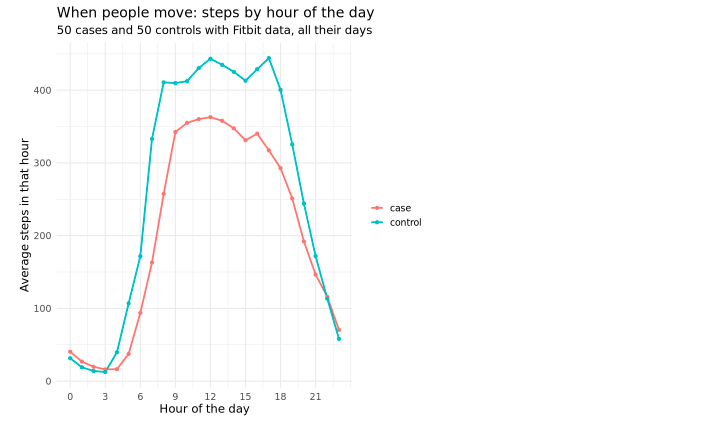
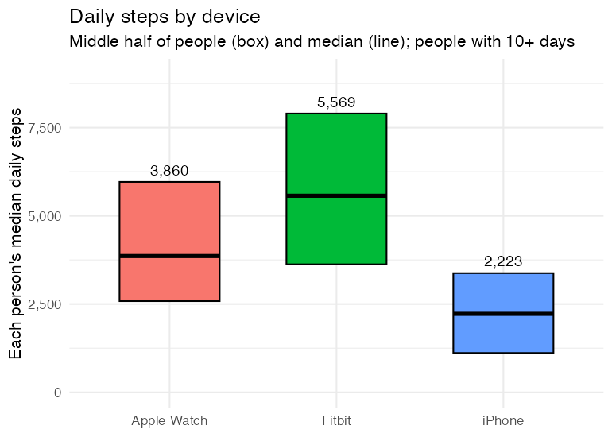

6.1 Wearables Basics
Wearables series, class 1 of 3 · R + SQL · 95 minutes
Open the notebook on GitHub Wearables series overview
Overview
Tens of thousands of All of Us participants share data from a Fitbit or from Apple Health (iPhone and Apple Watch). In this class we learn where the wearable data is, what it costs to use, and how to turn months of daily records into one clean value per person, ready for the analyses in 6.2 and 6.3.
Why this class matters
Wearable data is easy to misuse in three ways: a day the device wasn’t worn looks like an inactive day; a phone and a watch count steps differently; and one careless query on a minute-level table can cost tens of dollars. This class builds the habits that prevent all three: price every query, keep only valid days, and never pool different devices.
By the end you’ll be able to
- Describe the Fitbit and Apple HealthKit data: tables, layouts, and who has them
- Estimate and check the cost of a query, and query huge minute-level tables safely
- Define a valid wear day, and check a wear measure against a better one
- Summarise many days into one value per person
- Explain why Fitbit, iPhone, and Apple Watch steps can’t simply be pooled
- Describe who has wearable data, and what that means for generalisability
Analysis at a glance
| ❓ Question | Who in our cohort has wearable data, how much, and how do we turn it into usable variables? |
| 🧪 The analysis | Table sizes and costs; valid wear days; median daily steps per person, by device; steps by hour of the day; who has data |
| 🎯 Why | Un-worn days, different devices, and huge tables each lead to wrong or expensive results if ignored |
| ✅ What we conclude | How many cases and controls have usable data, and a per-person step summary for 6.2 |
| ⚠️ What it can’t tell us | Anything about cause. And people with wearables aren’t typical: results describe them |
| 🔗 Connections | Cohort from 1.1; units and cleaning from 2.1; long vs wide from 2.2; no survey weights from 5.1 |
Time and cost
| ⏱️ Class time | 95 minutes |
| ⏱️ Run time | about 5 minutes |
| 💰 Cost | about $1.40 in queries in our test run ($1.20 of it the Apple HealthKit query), plus the app |
| 📋 Before class | 0.0 setup run once. cohort_sample.csv from 1.1 is used if it’s in your bucket; otherwise the notebook makes it |
Class plan
| Time | Part | You do |
|---|---|---|
| 0:00 | 1. Key concepts: two data sources, wear time, one value per person, devices, cost | listen, ask |
| 0:20 | 2–3. Setup; the tables and their cost | run the cells |
| 0:30 | 4. Fitbit daily data and valid days | ✋ Try It Out 1 (5 min) |
| 0:50 | 5. Minute-level data, safely; is our wear measure any good? | run the cells, discuss |
| 1:05 | 6. Apple HealthKit: phone vs watch | run the cells |
| 1:20 | 7. Who has wearables? | ✋ Try It Out 2 (5 min) |
| 1:30 | Wrap-up | discuss |
Key concepts
Two sources of wearable data
| Fitbit | Apple HealthKit | |
|---|---|---|
| Where | the main CDR v9 dataset | a separate CDR v9 dataset (C_V9_R6_offcycle_healthkit, September 2026), joined by person_id; not in the Data Explorer |
| People with steps | about 68,500 | about 18,000 |
| Layout | wide: a column per measure (steps, sedentary_minutes, …) |
long: a row per measurement, with data_type, value (stored as text), and units |
| Detail | daily summary tables, and minute-level tables | individual measurements, seconds to hours apart; no daily summary |
| Also has | heart-rate zones, sleep stages, scales | resting heart rate, heart rate variability, blood pressure, blood glucose (about 1,000 people), walking speed |
Valid wear days
A day with 300 steps could be an inactive day, or a device left on the charger. Studies keep only valid days:
| Rule | Why |
|---|---|
| at least 10 hours of wear, judged from heart-rate minutes | Fitbit only records heart rate on a wrist |
| 100 to 45,000 steps | fewer is barely worn; more is likely an error |
| a person needs 10 or more valid days | for their average to mean something |
Then each person gets one value: their median daily steps over valid days.
Cost: big tables, clustering, and dry runs
The minute-level Fitbit tables are over 6 TB each (a full read is about $40). They’re clustered by person_id: each person’s rows are stored together, so a query filtered by person reads only those people. A dry run (free) prices a query before it runs, clustering included:
| The same minute-level query, for… | Reads | Costs |
|---|---|---|
| 50 people | about 5.7 GB | about $0.04 |
| our 10,000 people | about 3,000 GB | about $19 |
Cost grows with the number of people: keep minute-level queries to small groups.
Follow along in the Workbench
- Start your app and pull the newest notebooks, as in 1.1.
- Open
notebooks/wearables/6.1 wearables_basics.ipynb, with the R kernel.
Try It Out
Use 8 hours of wear (480 minutes) instead of 10. How many more valid days does that give, and does median daily steps change much?
✅ Check: a few more valid days, and a slightly lower median: partly-worn days have fewer steps.
Compare people with and without HealthKit data: age, sex, and case status. Are they like Fitbit users?
✅ Check: Apple users are selected in their own way: an iPhone isn’t a Fitbit.
Code walk-through
Two cost helpers
- 1
-
A free dry run first; the query runs only if it costs less than
max_dollars. Withmax_dollars = 0it only prints the estimate. - 2
- What the most recent query actually billed.
Daily steps plus wear time, in one query
1WITH wear AS (
SELECT person_id, date, SUM(minute_in_zone) AS wear_minutes
FROM heart_rate_summary
WHERE person_id IN (…)
GROUP BY person_id, date
)
SELECT a.person_id, a.date, a.steps, …, w.wear_minutes
FROM activity_summary AS a
2LEFT JOIN wear AS w ON a.person_id = w.person_id AND a.date = w.date
WHERE a.person_id IN (…)- 1
- Fitbit counts minutes in each heart-rate zone; their sum is a cheap measure of wear time.
- 2
-
LEFT JOINkeeps every activity day, even days without heart-rate data.
HealthKit: long data, text values, one device at a time
SELECT a.person_id,
DATE(SAFE_CAST(a.start_datetime AS TIMESTAMP)) AS date,
1 CASE WHEN d.product_type LIKE 'Watch%' THEN 'Apple Watch'
WHEN d.product_type LIKE 'iPhone%' THEN 'iPhone'
ELSE 'other' END AS device,
2 SUM(SAFE_CAST(a.value AS FLOAT64)) AS steps
FROM activity_measurements AS a
LEFT JOIN device_and_source AS d ON a.device_source_id = d.device_source_id
3WHERE a.data_type = 'STEP_COUNT' AND a.person_id IN (…)
4GROUP BY 1, 2, 3- 1
- Which device recorded each measurement.
- 2
-
valueis stored as text;SAFE_CASTturns it into a number (anything that isn’t becomesNULL). - 3
-
In the long layout,
data_typepicks the measure. - 4
- One total per person, day, and device: adding the phone and watch together would count the same steps twice.
What we found
Results from our test run in November 2026 (CDR v9), 5,000 cases and 5,000 controls.
Fitbit, in our sample
- 926 people had Fitbit data (about 850,000 person-days, 2009 to 2024); 840 had 10 or more valid days, with a median of 390 valid days each.
- 64% of days were valid. Most of the rest had no heart-rate data, so we couldn’t tell whether the device was worn.
- Median daily steps rose from 5,142 (all days) to 5,897 (valid days): the bias un-worn days create.
Is our wear measure any good?
For 100 people, we compared the cheap measure with the one published All of Us studies use:
| Wear measure | Median minutes | Days with 10+ hours |
|---|---|---|
| heart-rate zone total (daily table) | 1,440 (exactly 24 hours on 61% of days) | 98.6% |
| minutes with a heart-rate reading (minute-level table) | 1,392 (about 23 hours) | 95.5% |
These Fitbit users wear their devices almost around the clock. The zone total overstates wear, but at the 10-hour cutoff the two disagree on only about 3% of days: good enough for class; for a paper, use the minute-level count.
When people move

Controls took more steps through the working day; the groups were similar at night.
Phones, watches, and Fitbits

- The iPhone records far fewer steps: it misses every step taken without it.
- Within the same people (151 with both an iPhone and an Apple Watch), the iPhone recorded about 59% of their Watch steps.
- So Fitbit is the main data for 6.2; Apple steps are a separate measure, never pooled with Fitbit.
Who has wearable data?
| Cases | Controls | |
|---|---|---|
| Fitbit, 10+ valid days | 7.3% | 9.5% |
| Apple HealthKit steps | 1.8% | 3.3% |
People with Fitbit data were a little younger (mean age 58 vs 59), more often female (63% vs 59%), and less often cases (43% vs 51%). Selection: results describe wearable users.
Instructor notes
- Start with the cost table: “what would one careless query cost?” gets everyone’s attention.
- The wear-measure check is a good habit to model: a cheap measure looked suspicious (a median of exactly 24 hours), so we tested it against a better one, on a small group, for $0.04.
- iPhone vs Watch: ask students where their phone is right now. Most aren’t carrying it.
- Plots: a default box plot draws single people (whisker ends, outliers). The notebook draws it from percentiles, and the page shows only boxes and medians.
- Privacy: never plot one person’s minute-level data outside the Workbench.
Key takeaways
- All of Us has Fitbit data (main dataset) and Apple HealthKit data (a separate dataset)
- Price queries before running them, and check what they cost: minute-level costs grow with the number of people
- Keep only valid days, then summarise to one value per person; check your wear measure
- iPhone, Apple Watch, and Fitbit steps measure different things: don’t pool them
- Wearable users are a selected group
Next
6.2 Steps and type 2 diabetes: daily steps measured before a diagnosis.